Tinta que se queda
40 piezas tatuadas en el estudio. Pasa el ratón para pausar el muro y toca cualquier foto para verla de cerca.
Elige tu lenguaje
Cada tarjeta recorre los trabajos de un estilo. Púlsala para filtrar la galería.
Todas las piezas
Filtra por estilo y abre cualquier foto. En la vista ampliada, tócala otra vez para ver el detalle de líneas y sombras.
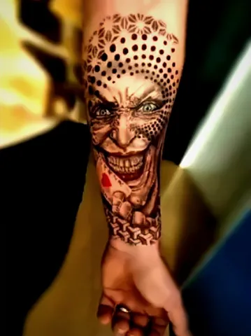
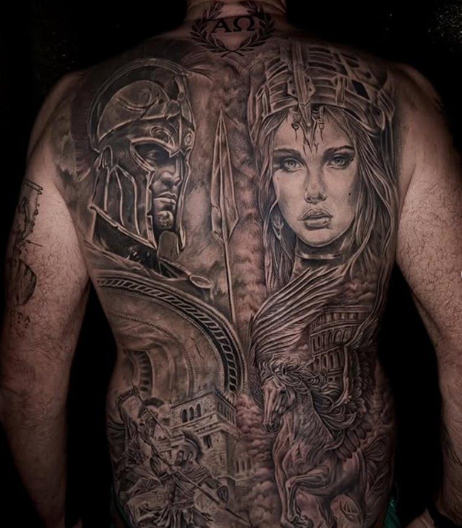

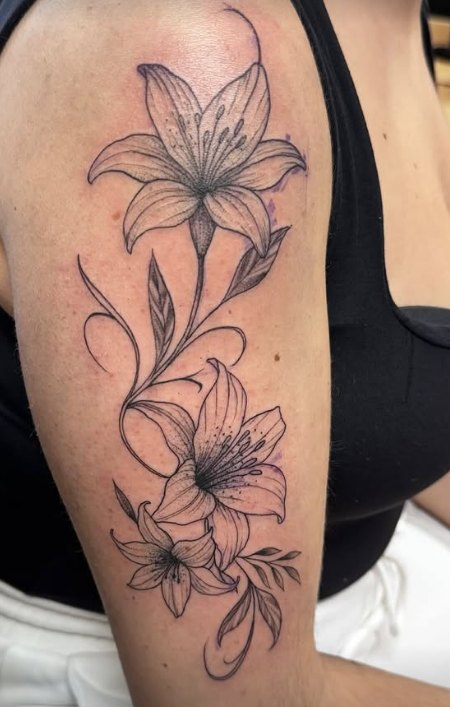


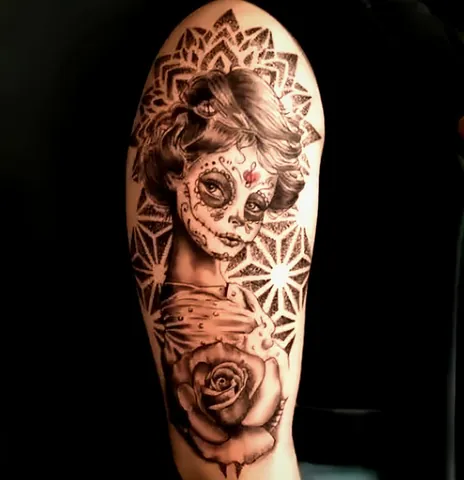


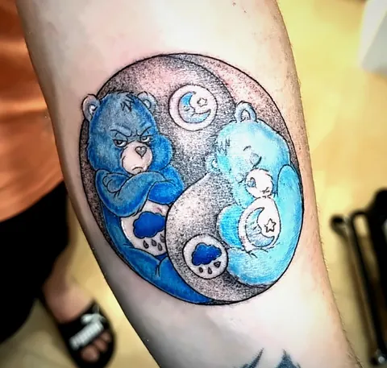
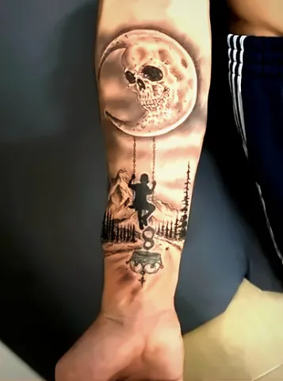


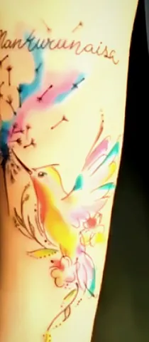


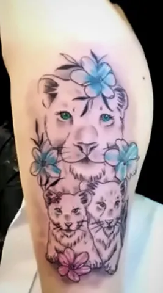
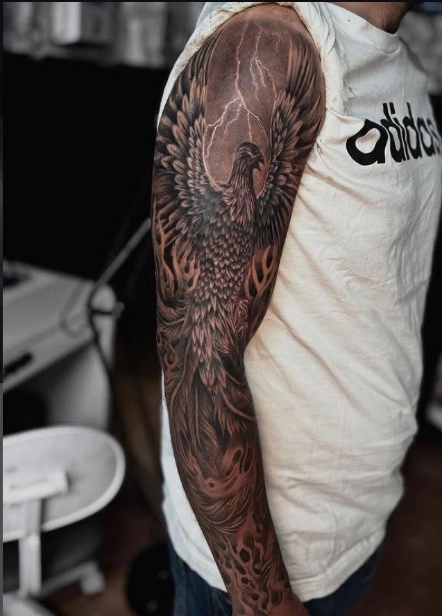
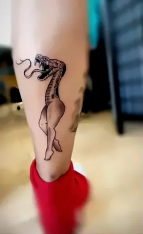


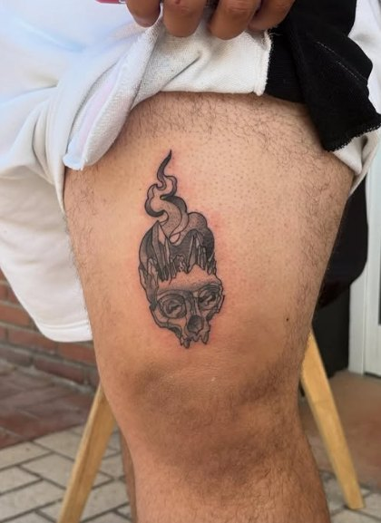
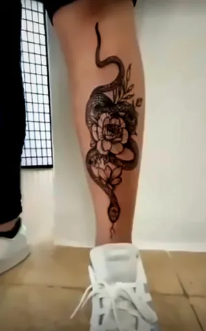


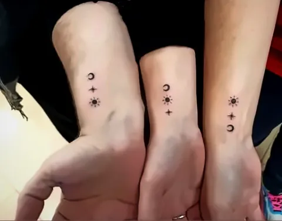
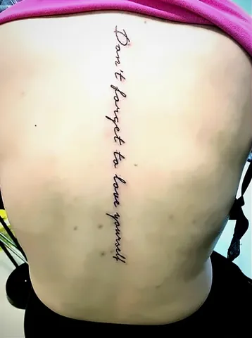

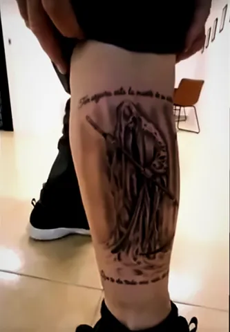
Un portfolio hecho en el estudio
Todas las fotos de esta página son tatuajes reales hechos en Ludus Kraken, nuestro estudio de tatuajes en el centro de Estepona. Encontrarás realismo en negro y gris, retratos, puntillismo, fine line, lettering y piezas a color, desde detalles pequeños hasta mangas y espaldas completas.
Cada diseño se dibuja a medida para la persona que lo lleva, así que no verás dos piezas iguales. Si alguna te inspira, guárdala y mándanos la foto como referencia: la adaptamos a tu idea, a la zona del cuerpo y al tamaño que buscas. Atendemos a clientes de Estepona, Marbella, San Pedro Alcántara, Manilva y Casares, siempre con cita previa.
¿Te ves con una de estas?
Mándanos la foto que más te guste como referencia y la adaptamos a ti.